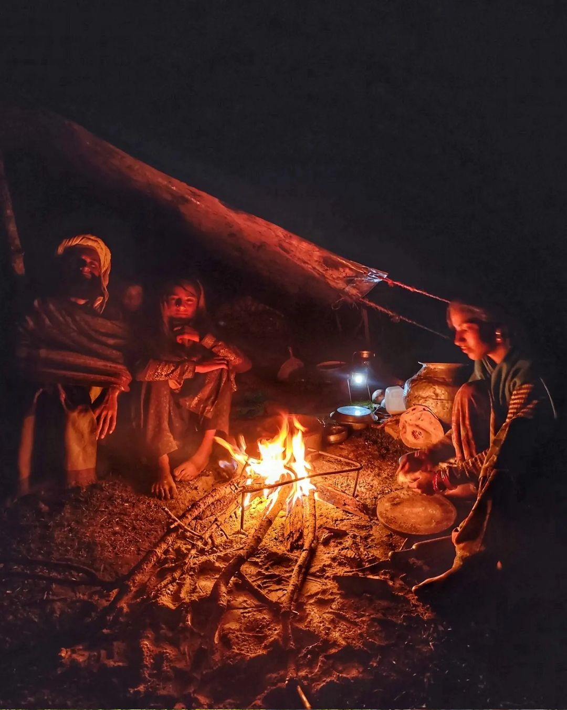

Within this journey exists a deeply rooted veterinary wisdom, not formalized in texts but carried through memory, practice, and observation. Illness is sensed before it is seen, treatments emerge from forests and fields, and healing becomes a shared responsibility between herder and habitat. This knowledge, passed quietly across generations, functions as a “living archive,” shaped by necessity and refined through time.
PUBLISHED
July 12,2025
